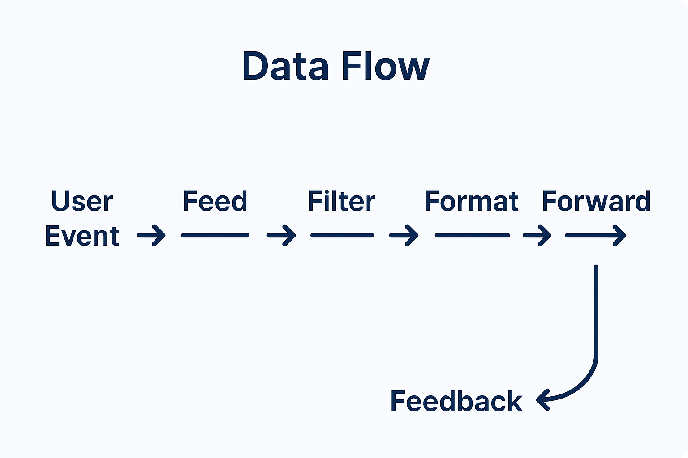

hexaFn
From Feed to Feedback, fully programmable.
Modular, event-driven pipelines powered by the 6F Lifecycle Flow.
Built for developer joy, composability, and documentation-first engineering.
Modular, event-driven pipelines powered by the 6F Lifecycle Flow.
Built for developer joy, composability, and documentation-first engineering.
Why hexaFn?
- Modular, composable, and testable
- Documentation-first approach
- GitHub-native structure: templates, workflows, linting
- MIT Licensed, SPDX-Compliant, REUSE-Spec Ready
- Created for plugin creators, pipeline architects, and system hackers
6F Lifecycle Flow
| Step | Purpose |
|---|---|
| Feed | Ingest from external sources (events, APIs, queues) |
| Filter | Pre-condition checks and gating |
| Format | Normalize, transform, validate |
| Function | Execute logic with user-defined behavior |
| Forward | Route results to KV stores, topics, services |
| Feedback | Log, trace, trigger, or audit |

Core Modules
| Module | Role |
|---|---|
| HexaStore | Event-driven KV storage |
| HexaCast | Pub-sub messaging engine |
| HexaRun | Function runtime (WASM, JS, DSL) |
| HexaTrigger | Trigger orchestration engine |
| HexaWatch | Observability & audit tracing |
| HexaBridge | Webhooks, SDK, external integration |
Documentation
Full documentation is available in the /docs/ folder on GitHub.
Dev Quickstart
git clone https://github.com/hTuneSys/hexaFn.git
cd hexaFn
cargo build
cargo run
Use .env or CLI args for environment config. See CONFIGURATION.md.